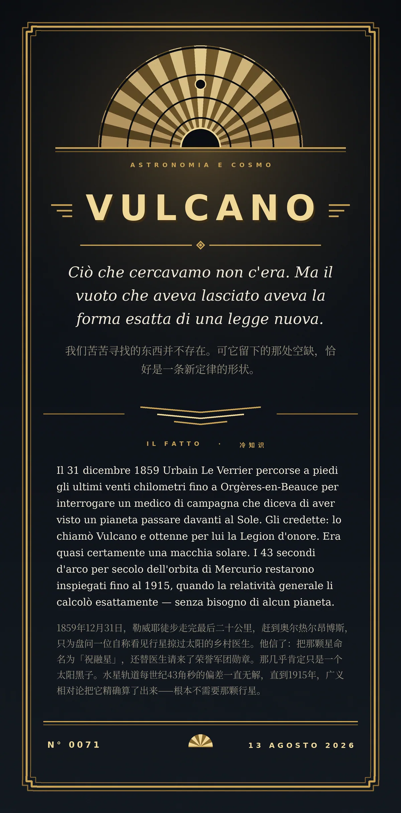

Ciò che cercavamo non c'era. Ma il vuoto che aveva lasciato aveva la forma esatta di una legge nuova.（我们苦苦寻找的东西并不存在。可它留下的那处空缺，恰好是一条新定律的形状。）
Il 31 dicembre 1859 Urbain Le Verrier percorse a piedi gli ultimi venti chilometri fino a Orgères-en-Beauce per interrogare un medico di campagna che diceva di aver visto un pianeta passare davanti al Sole. Gli credette: lo chiamò Vulcano e ottenne per lui la Legion d'onore. Era quasi certamente una macchia solare. I 43 secondi d'arco per secolo dell'orbita di Mercurio restarono inspiegati fino al 1915, quando la relatività generale li calcolò esattamente — senza bisogno di alcun pianeta.（1859年12月31日，勒威耶徒步走完最后二十公里，赶到奥尔热尔昂博斯，只为盘问一位自称看见行星掠过太阳的乡村医生。他信了：把那颗星命名为「祝融星」，还替医生请来了荣誉军团勋章。那几乎肯定只是一个太阳黑子。水星轨道每世纪43角秒的偏差一直无解，直到1915年，广义相对论把它精确算了出来——根本不需要那颗行星。）